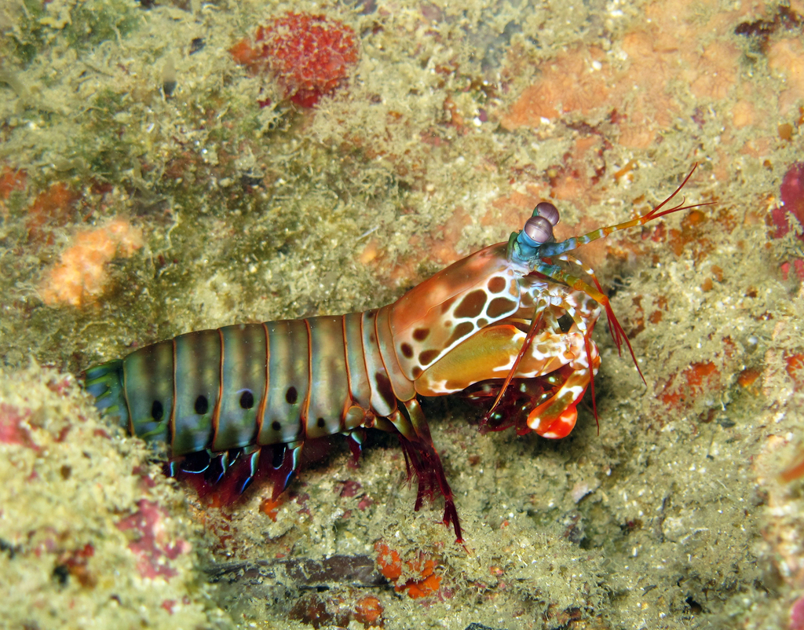

Fatos sobre o Stomatopoda
Stomatopoda (ou estomatópode), chamados popularmente de tamarutacas ou de lacraias-do-mar no Brasil é uma ordem de crustáceos marinhos e subclasse Hopoclarida, que agrupa cerca de 400 espécies caracterizadas principalmente pela morfologia da segunda pata torácicaque é modificada em apêndice suquelado, lembrando uma pata de louva-a-deus.

Predação
Os estomatópodes (Odontodactylus scyllarus) são predadores ativos que caçam presas com o auxílio de um sentido de visão muito apurado e capaz de interpretar polarização no espectro ultravioleta e infravermelho. Apresentam uma grande variação de tamanho, que pode ir de poucos milímetros até aproximadamente 40 cm nas espécies maiores. Eles vivem em fundo consolidado, lodoso ou ainda arenoso, onde cavam seus buracos ou aproveitam-se dos orifícios deixados por outros animais para neles se instalar. São animais exclusivamente carnívoros, alimentando-se de camarões, caranguejos, moluscos, peixes e até mesmo outros da mesma ordem. O segundo par de patas, muito desenvolvido, é usado tanto para atacar a presa como para se defender. O urópodo, quando aberto, também funciona para defesa, como um escudo, fechando a galeria em que o animal esteja instalado. A fêmea desova no local onde se abriga e, em caso de perigo, enrola os ovos como uma bola, prendendo-os junto ao corpo até encontrar um abrigo mais protegido.
Reino: Animalia; Filo: Arthropoda; Subfilo: Crustacea; Classe: Malacostraca; Subclasse: Hoplocarida; Ordem: Stomatopoda.

Visão do Stomatopoda
Esses animais possuem o mais complexo sistema de visão de cores do mundo animal, pois enxergam 12 cores primárias, correspondentes aos 12 pigmentos distintos presentes em sua retina.
O animal com o soco mais potente da natureza
O camarão mantis (Odontodactylus scyllarus) é capaz de conchas e até vidros de aquário com seus membros, sendo um dos animais proporcionalmente mais fortes de todo o mundo. A força de um soco do camarão mantis é de 1500 newtons ou cerca de 152 quilos, enquanto o soco médio de um ser humano está na casa dos 3300 newtons ou 336 quilos. Ou seja, eles são muito menores que a gente, mas dão socos com a metade da nossa força.
Onde encontrar Stomatopoda?
Estomatópodes podem ser encontrados em quase todo o litoral brasileiro, mas não são animais fáceis de se observar pelos seus hábitos mais furtivos. Devem ser manuseados com muita cautela pois são animais preparados para se defender com força, caso sejam incomodados.